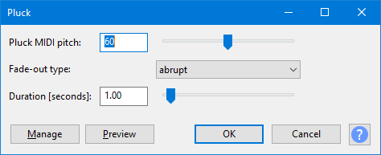

Pluck
Pluck generates a synthesized pluck tone with abrupt or gradual fade-out, and selectable pitch corresponding to a MIDI note.
- Accessed by:
- 
{kind=link}
Pluck MIDI pitch
MIDI values indicate what pitch to use. Examples:
- C notes are: 24, 36, 48, 60 (middle C, default), 72, 84, 96, 108
- C# (C sharp) above middle C is 61.
Fade-out type
Enables you to choose between an "abrupt" or a "gradual" fade out for the pluck.
Duration [seconds]
Specifies the length of the specified pluck. The default is 1.0 seconds.
Buttons
Clicking on the command buttons give the following results:
- gives a dropdown menu enabling you to manage presets for the tool and to see some detail about the tool. For details see Manage presets.
- plays a short preview of what the audio would sound like if the effect is applied with the current settings, without making actual changes to the audio. The length of preview is determined by your setting in , the default setting is 6 seconds.
- applies the effect to the selected audio with the current effect settings.
- aborts the effect and leaves the audio unchanged.
 brings you to the appropriate page in the Manual, this page.
brings you to the appropriate page in the Manual, this page.